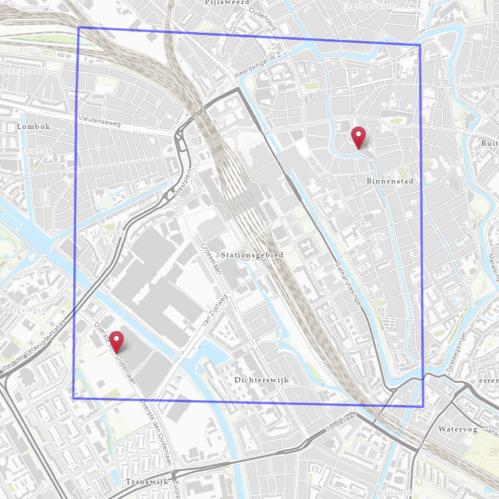
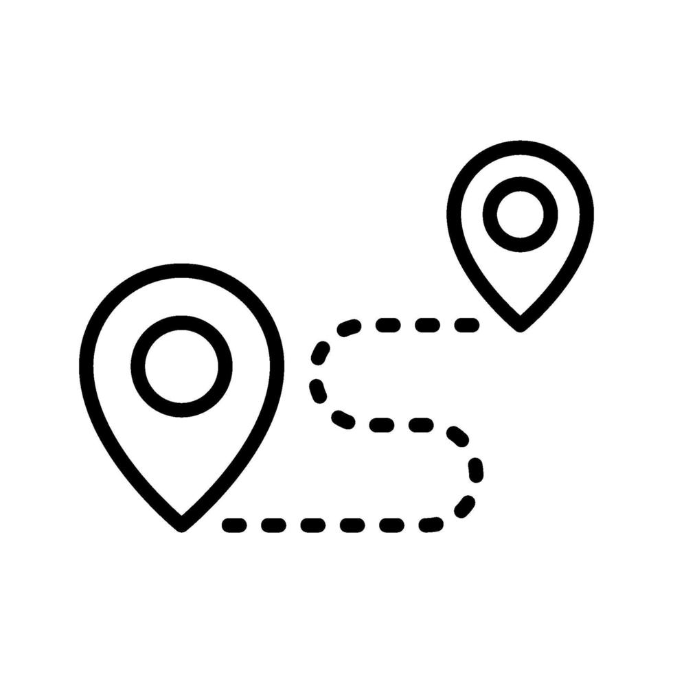
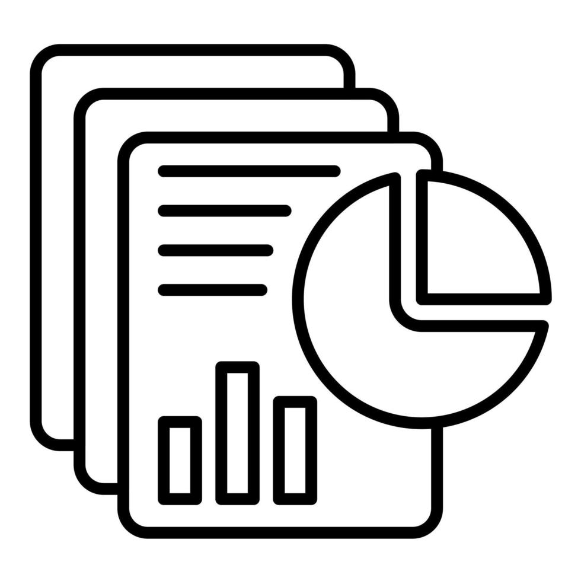

Tools
Het Proces
-

1
Project Intekenen
Het proces begint met het intekenen van het projectgebied, inclusief een start- en eindpunt. Op basis van deze gegevens wordt het tracé automatisch berekend. Daarnaast kunnen no-go zones en boorlijnen worden toegevoegd, zodat extra engineeringkennis wordt geïntegreerd in het gebied.
-

2
Automatisch Trace
Op basis van de ingetekende gegevens wordt het tracé automatisch berekend. Hierbij wordt rekening gehouden met actuele omgevingsdata, zoals kabels en leidingen, bodemgesteldheid en bebouwing. Het resultaat is een snel en efficiënt tracé, dat rekening houdt met relevante omgevingsfactoren.
-

3
Rapportage
De automatische tracéberekening bepaalt de meest optimale route. Echter, er blijven veel relevante omgevingsfactoren die de engineer in het verdere ontwerpproces moet meenemen. De rapportage ondersteunt bij het in kaart brengen van deze factoren.
-

4
Project Inzien
Nadat het tracé is berekend, ontvangt u de gegevens. Deze zijn te bekijken via de projectviewer. Daarnaast worden de bestanden ook beschikbaar gesteld in .dwg- en .gdb-formaat.
-
Detail
Engineering
Instructie
Instructie Intekenen
Hieronder staan de instructies voor het intekenen van een project voor de automatische tracé-tool. Zodra u de gedownloade GeoJSON naar ons mailt, kunnen wij uw verzoek in behandeling nemen.
- Open de Intekenpagina: Ga naar intekenen om de intekenpagina te opnenen.
- Zoek een specifieke locatie: Rechtsboven bevindt zich een zoekfunctie (vergrootglas-icoon). Klik hierop en voer een stad, adres of coördinaten in. De kaart zoomt automatisch in.
- Wijzig de ondergrondkaart: Rechtsboven bevindt zich een kaartwisseloptie (stapelpictogram). Klik hierop om te schakelen tussen de RD-kaart (topografisch) en de luchtfoto (satellietbeelden).
-
Selecteer een functie: Gebruik het menu links onderin de kaart. Kies uit:
- Teken Projectgebied: Markeer het projectgebied door een polygon te tekenen.
- Teken Start/Eind Punten: Plaats het start- en eindpunt van het project.
- Teken No-Go Zones: Markeer gebieden waar op voorhand bekend is dat er niet gegraven mag worden.
- Teken Boorlijnen: Teken extra de boorroutes tussen start- en eindpunt (bijvoorbeeld bij spoorwegen en waterwegen, om het tracé extra mogelijkheden te geven om hier over te steken).
- Download JSON: Download de ingevoerde gegevens als GeoJSON-bestand.
- Vul aanvullende parameters in: Open het gedownloade JSON-bestand en vul specifieke projectinformatie in. Het invoeren van een projectnaam is verplicht (vul een projectnaam in die voor u herkenbaar is). Voor de overige parameters zijn default waarden ingevuld. Deze kunnen aangepast worden naar inzicht van de engineer en zullen invoed hebben op de berekening van het tracé.
- Verstuur het bestand: Mail het JSON-bestand naar ons opgegeven e-mailadres. Het team zal uw gegevens verwerken.
- Ontvang de resultaten: U ontvangt per e-mail een set met middenspanning-tracés en een bijbehorende rapportage die specifiek voor uw projectgebied zijn gegenereerd.
Instructie Viewer
Hieronder staan de instructies voor het bekijken van projectgegevens die zijn berekend met de automatische tracé- en rapportagetool. Zodra uw tracés en rapportages zijn berekend, ontvangt u de resultaten per e-mail. Dat betreft ook een oplever folder die te openen is en de viewer, met alle relevante data die voortgekomen zijn uit de analyses.
- Toegang tot de Viewer: Ga naar viewer om de viewerpagina te openen.
- GeoJSON Uploaden: Onderin de viewer vind je de knop “Upload GeoJSON”. Gebruik deze knop om de map met opleverdata die door ons zijn gedeeld te opnenen. Dit stelt je in staat om je eigen project-data toe te voegen. De data komt overeen met de data die beschreven staat in de rapportage. Nadat je het bestand hebt geüpload, worden de bijbehorende features zichtbaar op de kaart.
-
Legenda en Kaartlagen:
- Legenda: De Legenda knop bevindt zich linksonder in de viewer en biedt een overzicht van alle lagen en symbolen.
- Selecteren van Lagen: Rechtsboven zit de Layer Switcher, waar je de zichtbaarheid van de lagen kunt beheren door ze aan- of uit te vinken. Je kunt de lagen ook verslepen om ze te rangschikken.
- Layer-informatie: De volgende lagen zijn na het uploaden van de GeoJSON-map beschikbaar:
- Base Maps: De basiskaart die je als achtergrond kunt gebruiken, bijvoorbeeld satellietbeelden of topografische kaarten.
- Ingetekende Features: De lagen die bij het aanvragen van een tracé zijn ingetekend via de intekentool, zoals het projectgebied, start- en eindpunten, nogo-zones en boorlijnen.
- Ongunstige Zone: Gebieden waar belemmeringen zijn geconstateerd voor het aanleggen van een tracé, zoals geasfalteerde wegen, erven, waterwegen en locaties met veel bestaande kabels en leidingen.
- Klic: Informatie over kabel- en leidinginfrastructuur in het gebied.
- Tracé Kosten, Lengte en Doorlooptijd: De drie tracés die berekend zijn door de automatische tracé tool, inclusief voorgestelde boorlijnen/mantelbuizen.
- Kruisingen Tracé Kosten, Lengte en Doorlooptijd: Gegevens over de kosten, lengte en doorlooptijd van kruisingen met andere infrastructuur, zoals ook beschreven staat in de Rapportage.
- Overig: Diverse overige lagen die aanvullende informatie kunnen bevatten, zoals bijvoorbeeld beschermingszones of risicogebieden.
- Navigeren in de Viewer: Gebruik je muis of de knoppen in de linkerbovenhoek van de kaart om in of uit te zoomen of de kaart te verschuiven.
- Analyse-informatie: Klik op objecten (zoals een lijn of gebied) op de kaart om aanvullende informatie te zien. Dit kan bijvoorbeeld informatie over kosten, lengte, doorlooptijd of andere projectparameters zijn.
- Google Street View: Je kunt een dubbelklik op een locatie op de kaart uitvoeren om direct de Google Street View van die locatie te bekijken.